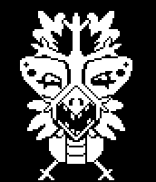
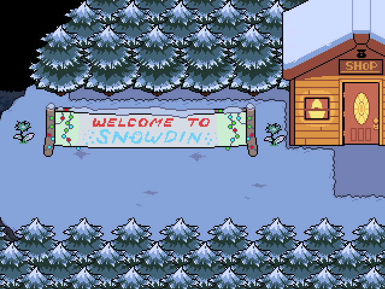
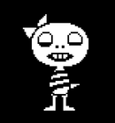

Snowdrake
Snowdrake és un dels molts monstres que pot ser trobat pel jugador en el Bosc de Snowdin. És un adolescent que té problemes (aparentment amb el seu pare), i només vol ser un comediant popular.
La primera gran zona d'Undertale
És la primera zona gelada de Undertale després de sortir de les Ruïnes. Es caracteritza pels seus puzles senzills i la introducció dels esquelets Sans i Papyrus, els qui intenten capturar al jugador. És una àrea clau per a definir la ruta, culminant al Poble de Snowdin.
L'entorn està inspirat en un bioma de taigà, amb densos boscos de coníferes i camps coberts per una capa perpètua de neu.

Puzles de X i O: Consisteixen a lliscar-se sobre el gel per a convertir totes les "X" en "O" trepitjant-les una sola vegada. Si t'equivoques, pots parlar amb Papyrus perquè et doni pistes, com un interruptor amagat en un arbre pròxim que resol el puzle automàticament. Laberint Elèctric: Papyrus et lliura un orbe per a creuar un laberint invisible que electrocuta al contacte. Irònicament, l'orbe revela el camí en ser ell qui rep la descàrrega en lloc del jugador. Sopa de Lletres i Mots encreuats: Un moment còmic on Sans i Papyrus discuteixen sobre quin és més difícil.

Snowdrake és un dels molts monstres que pot ser trobat pel jugador en el Bosc de Snowdin. És un adolescent que té problemes (aparentment amb el seu pare), i només vol ser un comediant popular.

Monster Kid és un monstre groc, amb una cua i espines en la part posterior del seu cap. Manca de braços i usa una camisa de ratlles. La marca sota el seu ull dret és major a la marca del seu ull esquerre. Això és probablement un ull morat per caure tan seguit.

Hissi Cap és un monstre trobat en el Bosc de Snowdin. Més tard pot ser trobat als voltants del Bosc de Snowdin si el protagonista no ha assassinat en aquesta àrea